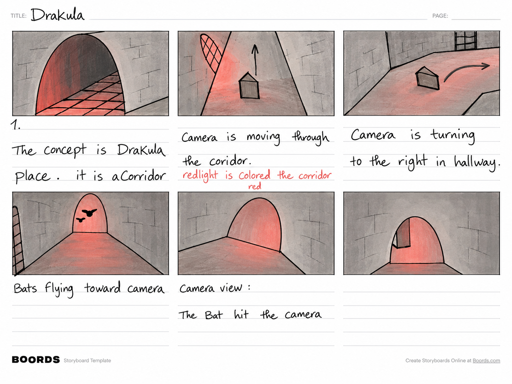
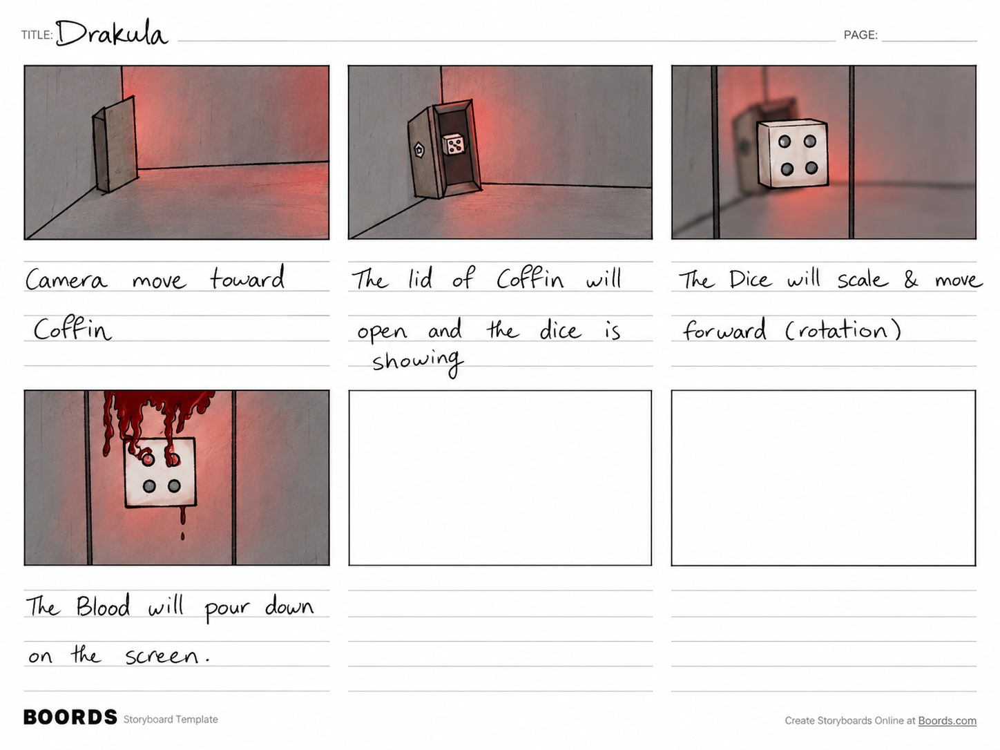

A dark corridor.
An unexpected roll.
A Dracula-themed reveal for a custom dice set in Mencherz. The storyboard turns a product introduction into a short journey through a red-lit castle.
- Project
- Mencherz
- Tools
- Blender & After Effects
- Format
- 19 seconds · 3D motion

Give the dice
a world of their own.
This promotional animation introduces a custom dice set for the Mencherz mobile game. The existing dice assets became the focus of a Dracula-inspired setting, with the work centered on presentation, animation, atmosphere, and compositing.
The concept places the reveal at the end of a journey. A stone corridor, red light, bats, and a coffin establish the theme before the dice take center stage.
Build anticipation
with the camera.
The first storyboard sheet plans a route through the castle. The camera enters an arched corridor, travels forward, and turns right into a hallway. Red illumination ties the spaces together.
Bats fly toward the camera, with a drawn note proposing a bat striking it. This interruption adds a sudden beat before the approach to the final room.

Open the coffin.
Reveal the product.
The second sheet brings the camera toward a coffin. Its lid opens to reveal the die, which moves forward, grows in the frame, and rotates so the product becomes the focal point.
The final drawn panel proposes a stylized blood effect pouring down the screen. These boards document the planned sequence, from the first approach to the closing visual effect.

Atmosphere meets
product motion.
The project combines Blender and After Effects. The 3D setting and animated presentation give the existing dice a themed context, while compositing brings the visual elements together.
The storyboard makes the intended shift in attention clear: first the environment, then the coffin, and finally the dice. The finished animation below is the final reference for how that plan translated into motion.
The finished
piece.
Watch the final 19-second animation.
Watch on Aparat